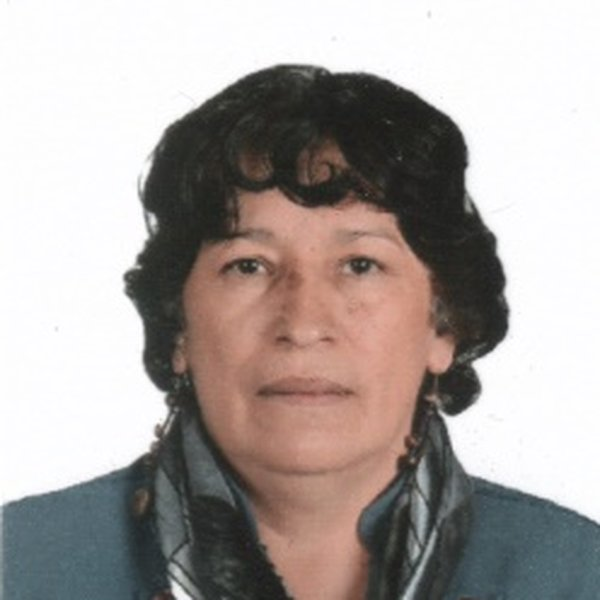

Rosa Inés Pedreros Martínez
Docente investigadora · CEPE
Licenciada en Física de la Universidad Distrital (1985), magíster en Docencia de la Física de la Universidad Pedagógica Nacional (1995) y doctora en Educación del Doctorado Interinstitucional en Educación (2016). Docente investigadora de la Corporación Escuela Pedagógica Experimental desde 1990, donde fue profesora de ciencias y rectora (1991–2004). En la UPN dirigió el Departamento de Física y coordinó la Especialización en Docencia de las Ciencias para el Nivel Básico. Asesora las pasantías investigativas de Pedagogía Infantil y de la Licenciatura en Física de la Universidad Distrital con la CEPE. Autora de libros, artículos y ponencias.